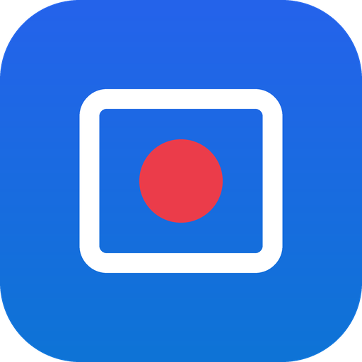

Ez Screen Record
A minimal screen recorder for tutorial videos. For Mac (Apple Silicon and Intel) and Windows.
Install on your Mac
curl -fsSL https://roman-kalinin.github.io/ez-screen-record/install.sh | bash
- Open Terminal (⌘ Space, type “Terminal”).
- Paste the command and press Return.
- When the app opens, allow Screen Recording, then quit and reopen it once.
Running it again updates to the newest version.
Prefer to install by hand? Grab the .dmg from
the latest release
(arm64 for Apple Silicon, x64 for Intel).
Install on Windows
irm https://roman-kalinin.github.io/ez-screen-record/install.ps1 | iex
- Open PowerShell (Win, type “PowerShell”, press Enter).
- Paste the command and press Enter.
- The app installs for your user (no admin needed) and opens.
Running the command again updates to the newest version. If SmartScreen warns about the installer, click More info, then Run anyway.